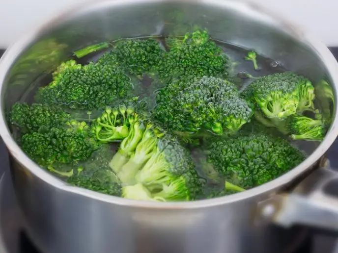

Ou dur amb verdures
Ingredients
2 ous
1 pastanaga petita
1 bròquil petit
Sal i pebre
Pas a pas
Bullir els ous 10 minuts.
Coure les verdures al vapor 5-7 minuts.

Servir els ous amb les verdures i afegir sal i pebre.
Resultat final